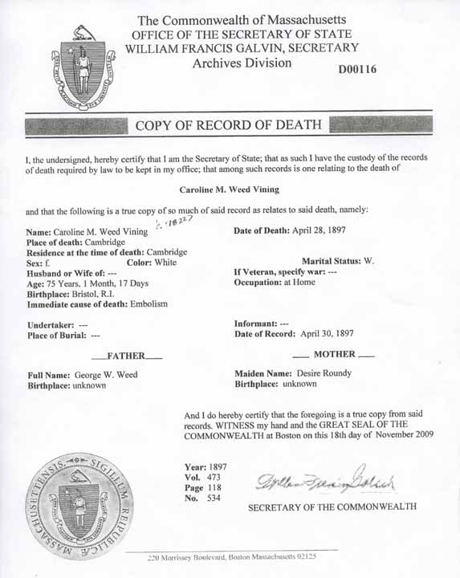
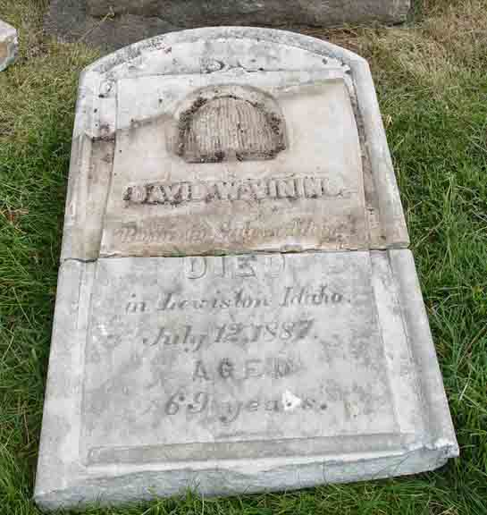

Census Data
| 1850 | 1860 | 1870 | 1880 | 1890 | 1900 | |
| David W. Vining | 30 | 40 | ? | ? | ? | ? |
| Caroline M. (Weed) Vining | 28 | 38 [see note below] |
47 | ? | ? | dead |
| George Warren Vining | 6 | 17 [see note below] |
? | ? | ? | ? |
| Gertrude Elizabeth Vining | 4 | 15 [see note below] |
? | ? | ? | ? |
| Abbie A. Vining | 1 | 11 [see note below] |
? | ? | ? | ? |
| Eugene R. Vining | 8 [see note below] |
18 [see note below] |
? | ? | ? | |
| Carrie D. Vining | 4 [see note below] |
14 [see note below] |
? | ? | ? |


Death Data
Death record for Caroline M. (Weed) Vining:
